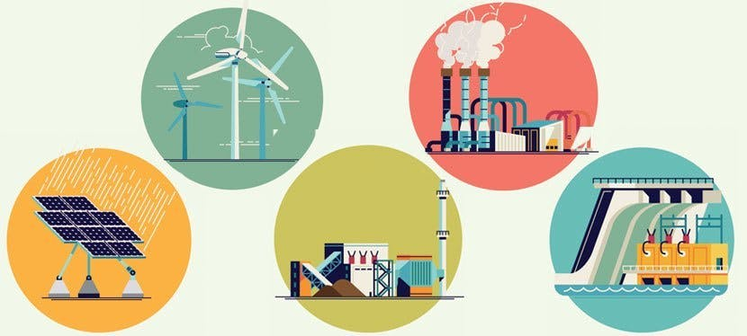

Dans le but d'agir pour le développement durable, Ubisoft a dressé une liste d'éléments à prendre en compte.
L'entreprise cherche à réduire au maximum les déplacements de ses employés en instaurant la possibilité du travail à distance, notamment avec le "Travaillez où vous voulez"
Ubisoft essaye d'augmenter son utilisation d'énergie renouvelables, en 2020 73% de l’électricité consommée par le groupe provenait de sources d’énergies renouvelables. 
L'entreprise veut prolonger la durée de vie de son matériel, notamment par le biais
du don d'équipements usagers.
Elle a également engagé des centres de données pour faire des recherches sur des moyens
de recycler et utiliser la chaleur produite par leurs serveurs.